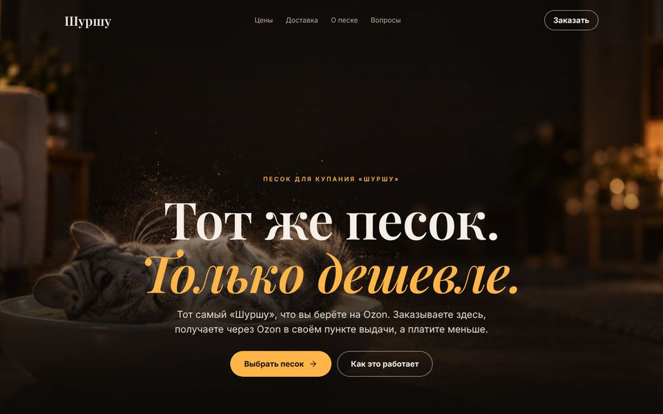
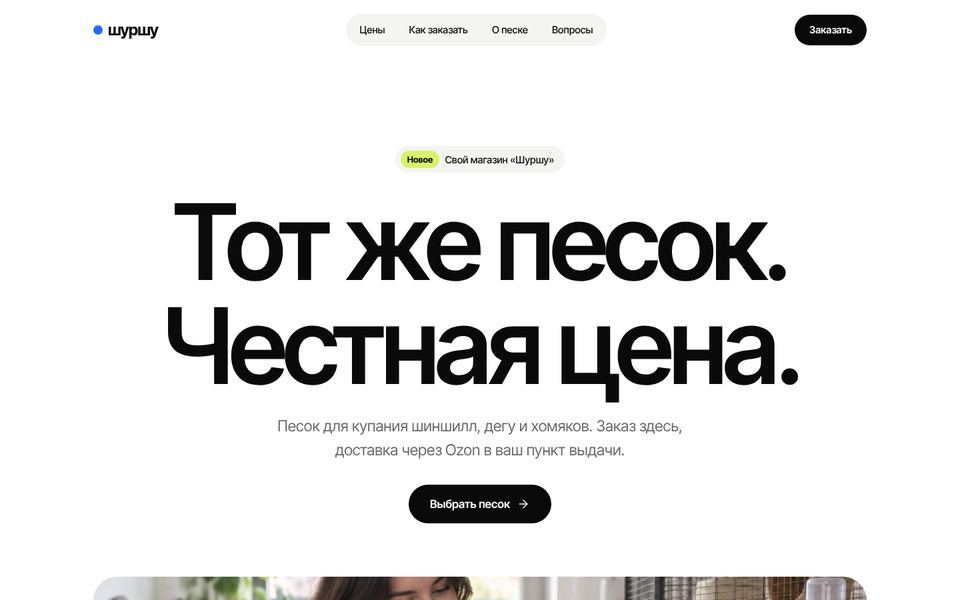
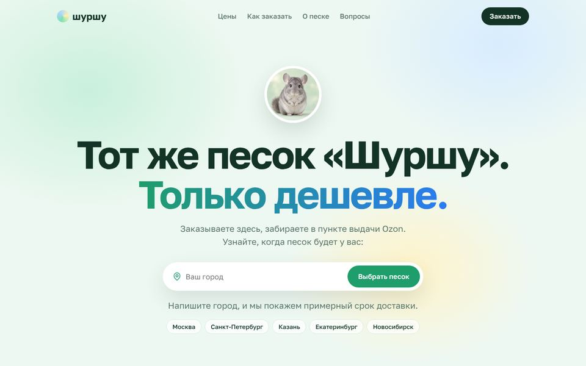
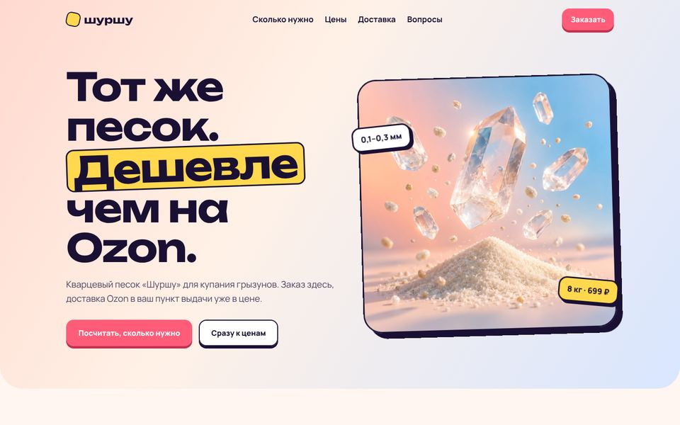

Шуршу: 10 сайтов по примерам Land-book
Каждый вариант сделан по приёмам одного из лучших сайтов с Land-book. Смысл у всех один: тот же песок, что на Ozon, дешевле, а получение через Ozon как обычно. У каждого своя страница оформления заказа и документы.

1КиноШиншилла купается на весь экран, тёплый вечер

2ЗаявлениеОгромный заголовок и абзац, который проявляется

6МятаМятный, строка города и экран заказа в телефоне

10ИграЯркий, с калькулятором «сколько песка нужно»
- Фото сгенерированы. Мешок и бутылка на них нарисованы, для запуска нужны настоящие фото.
- Телефон, MAX, почта, ИП и оплата пока заглушки (жёлтые).
- Внизу каждого сайта стрелки: ими можно листать все 10 подряд.